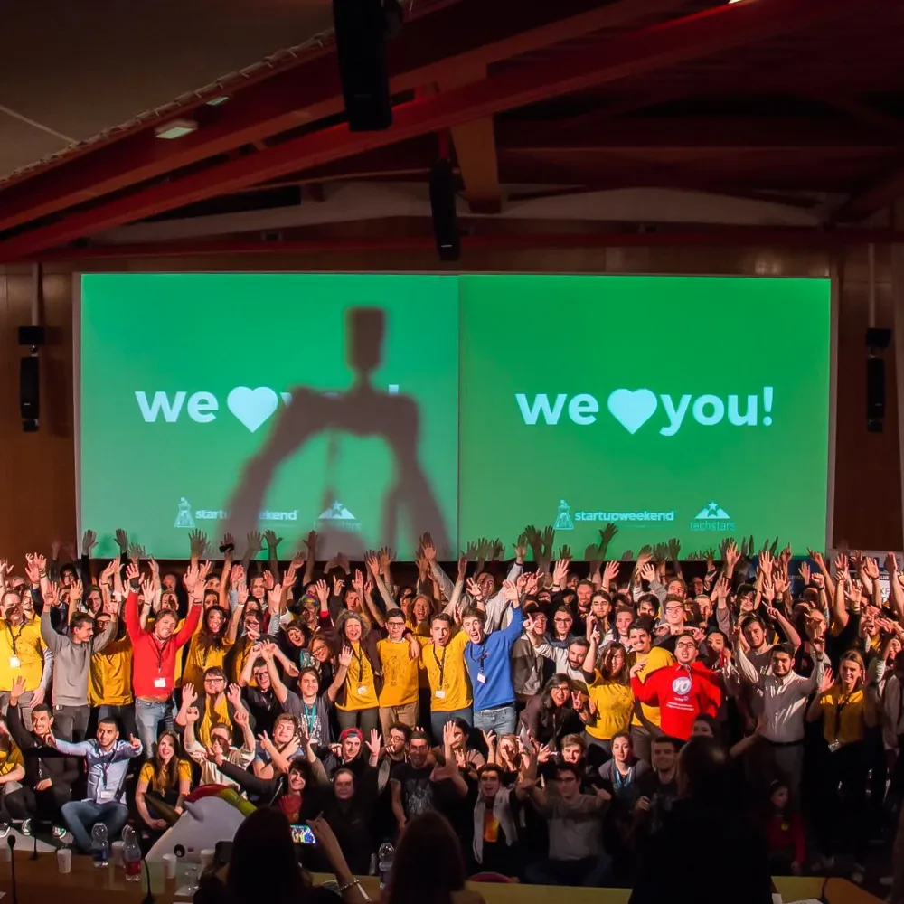

D’abord la proximité
Un prestataire proche arrive à l’heure, revient facilement et passe moins de temps dans les transports.
Nettoyage pour les entreprises
Q DEAL met en relation les entreprises qui ont besoin d’un nettoyage, régulier ou ponctuel, et des prestataires installés à proximité : des étudiants auto-entrepreneurs aujourd’hui, des professionnels du nettoyage bientôt. Bureaux, commerces, cabinets, copropriétés et locaux après travaux.
 Un local propre.Tout près.
Un local propre.Tout près.Des consignes données une seule fois
Quelques heures par semaine dans un cabinet ou une remise en état en urgence sont difficiles à organiser avec une société sous contrat. Sur Q DEAL, l’entreprise décrit ses locaux, ses photos et ses consignes une fois : chaque prestataire les retrouve, même quand il change.
Notre prestation
Notre objectif : que chaque entreprise trouve un nettoyage fiable près de chez elle, que les étudiants gagnent un revenu sans se perdre dans l’administratif, et que les pros enchaînent des prestations voisines plutôt que des kilomètres.
Notre origine
La proximité que nous promettons, nous la pratiquons : Q DEAL est né à Strasbourg, en octobre 2026, lors d’un Startup Weekend. 54 heures pour construire le projet, le confronter à des entrepreneurs et le présenter devant un jury.
Notre équipe est à Strasbourg : entreprises et prestataires ont un interlocuteur sur place.

Pourquoi Q DEAL ?
Les étudiants auto-entrepreneurs prennent des prestations autour de leurs cours, avec un suivi administratif par email pour rester en règle. Les professionnels du nettoyage arrivent bientôt, avec un agenda intelligent qui regroupe leurs prestations par quartier.
Q DEAL complète les équipes d’entretien et les sociétés de nettoyage en place, sans les remplacer. Chaque prestation précise ses consignes et ses conditions ; le prestataire reste libre d’y répondre ou non.


Un profil clair pour des prestations pertinentes
Les prestataires indiquent les nettoyages qu’ils savent faire, leur zone de déplacement et leurs disponibilités. Un parcours guidé de création de profil rend les suggestions de prestations plus pertinentes.
Devenir prestataireNotre approche
Q DEAL rend les attentes plus lisibles, pour les entreprises comme pour les prestataires.
Un prestataire proche arrive à l’heure, revient facilement et passe moins de temps dans les transports.
Des photos des zones à nettoyer, une description précise et les horaires d’accès, donnés une fois pour toutes.
Le prestataire choisit les prestations auxquelles il répond et les clients avec lesquels il travaille.
Q DEAL complète les équipes d’entretien et les sociétés de nettoyage, pour les besoins qu’elles couvrent mal.
Nos critères pour chaque prestation
Une mise en relation utile commence par des informations fiables, un périmètre clair et le choix laissé aux parties.
Rejoignez Q DEAL
Entreprises et prestataires disposent chacun d’un parcours dédié. Dites-nous qui vous êtes, nous vous guidons.